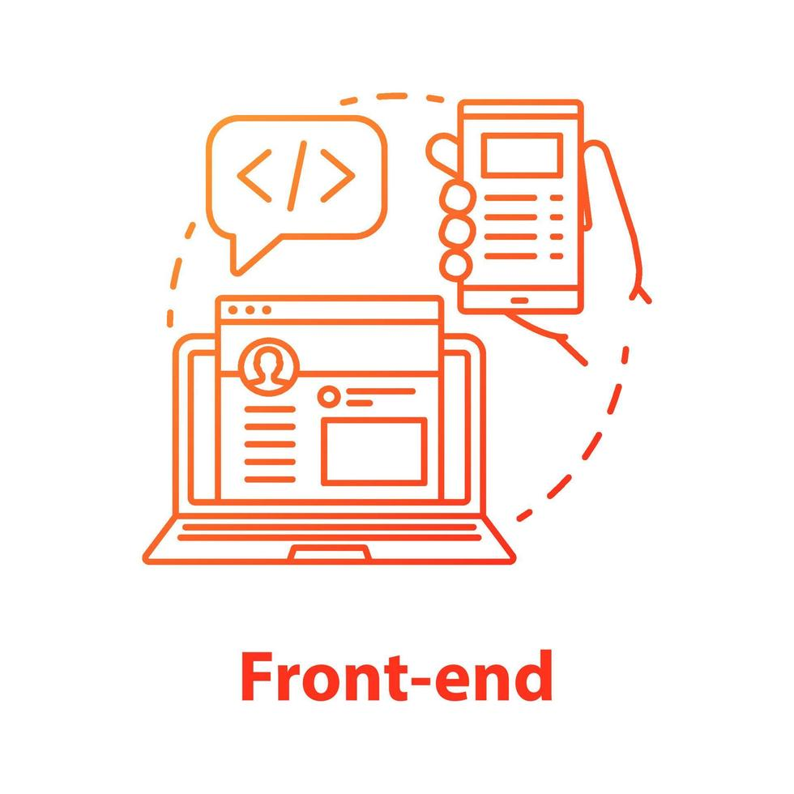

El desarrollo frontend se encarga de la interfaz visual con la que interactúan los usuarios.
Tecnologías más comunes: HTML, CSS, JavaScript, Bootstrap, React y Vue.
Un buen frontend debe ser responsivo, accesible y visualmente atractivo.

El frontend moderno usa APIs, Webpack, Vite y Node para compilar proyectos.